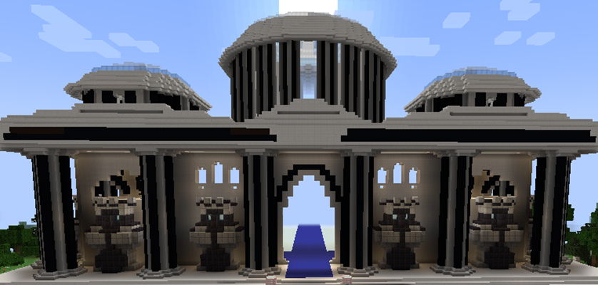
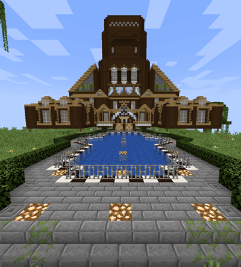

Java
IP: rainbowolves.net
Port: 25565
Bedrock
IP: rainbowolves.net
Port: 19132
About RainboWolves
We played for a long time on different servers and in different worlds and unfortunately were unable to save the entire history of our game due to reasons beyond our control. But here at RainboWolves we have finally managed to create a safe and controlled space for creativity and survival that can unite us both from Java and Bedrock versions. The server retains the atmosphere of the original Minecraft. There are only two plugins - one of which are responsible for cross-platform functionality and one more - WorldEdit - increases creative potential!

